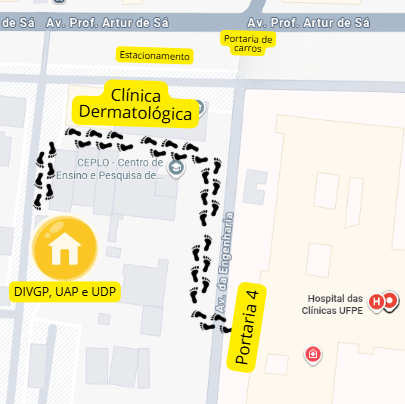

Identifique o período e a natureza do documento antes de iniciar a busca. Consulte primeiro as fontes digitais e recorra ao Arquivo de Pessoal apenas quando o documento não for localizado.
Antes de solicitar documentos às unidades administrativas: verifique se o comprovante já está disponível nos sistemas institucionais. Muitos documentos podem ser obtidos diretamente pelo próprio servidor.
Além de certificados de cursos, podem ser utilizados documentos institucionais que comprovem a trajetória profissional, como portarias, atas, declarações, relatórios, processos administrativos, manuais, POPs e outros registros relacionados às atividades desenvolvidas.
1
Boletins Oficiais
Portarias, designações e outros atos administrativos
Boletim Oficial da UFPE
A Seção de Arquivo de Pessoal disponibiliza, no Google Drive, uma pasta com os Boletins Oficiais da UFPE para facilitar a localização de portarias e outros atos administrativos.
Após acessar o link, localize a pasta BOLETIM OFICIAL/UFPE em Compartilhados comigo.
Restrinja a busca à própria pasta, usando a opção Pesquisar em BOLETIM OFICIAL/UFPE.
Pesquise pelo nome completo ou pela matrícula SIAPE. Para obter resultados mais precisos, coloque o termo entre aspas, por exemplo: “Maria José Azdin”.
Consulte o Boletim de Serviço do HC/UFPE para localizar portarias, atos administrativos e demais documentos publicados pelo Hospital das Clínicas da UFPE/Ebserh.
Consulte sua pasta funcional digital. Servidores que ingressaram antes de 2016 podem localizar a digitalização da pasta física no item Legado. Documentos produzidos a partir de 2016 podem aparecer identificados pelo assunto.
Acesse o SOUGOV pelo aplicativo ou pela versão web.
No menu Autoatendimento, selecione Assentamento Funcional Digital.
Escolha o vínculo e procure o item Legado ou o assunto do documento.
Em caso de divergência nas informações: entre em contato com a Divisão de Gestão de Pessoas (DIVGP) pelo telefone ou WhatsApp (81) 2126-3782, ou procure atendimento presencial na Divisão.

Local temporário da DIVGP, UAP e UDP — acesso pela Portaria 4, próximo à Clínica Dermatológica.
4
Plataformas EAD
Certificados de cursos
Consulte a plataforma em que o curso foi realizado para localizar e baixar o respectivo certificado. Entre as plataformas mais utilizadas estão ENAP/Escola Virtual.Gov, 3EC, UNA-SUS e AVASUS.
3EC: no menu do usuário, acesse Perfil e depois Meus certificados. Nessa área, é possível visualizar e baixar os certificados disponíveis.
Processos iniciados a partir de 2019 estão disponíveis no SIPAC. Processos anteriores a essa data são físicos e podem não apresentar documentos anexos. No sistema, podem ser localizados processos, atas, ofícios, despachos e anexos.
Acesse o SIPAC, faça login e entre na Mesa Virtual.
Selecione Consulta Geral de Processos.
Expanda Interessados no Processo e pesquise pelo nome completo.
Caso tenha alterado o nome, pesquise também pelo nome utilizado à época.
Procure assuntos relacionados ao documento, como DESIGNAÇÃO ou FUNÇÃO GRATIFICADA.
Abra o processo, acesse Documentos e faça o download.
No SEI HU Brasil podem ser localizados processos, atas, projetos básicos, declarações, relatórios e outros documentos produzidos no âmbito do HC/UFPE/Ebserh.
Quando utilizar: quando o documento estiver relacionado a uma atividade, processo ou ação administrativa desenvolvida no Hospital.
A Declaração de Preceptoria deve ser solicitada à Gerência de Ensino e Pesquisa (GEP) por meio do Alô GEP, disponível como ícone na área de trabalho dos computadores institucionais.
Antes de solicitar: verifique se o seu cadastro de preceptor(a) está realizado e atualizado. O cadastro ou a atualização somente é efetivado após a validação da chefia imediata.
Atuação como gestor ou fiscal de contrato antes de 2014
Para períodos de atuação anteriores a 2014, solicite a declaração ao Ordenador de Despesas do respectivo contrato. Apresente as portarias de designação e informe o período de atuação. A declaração somente poderá abranger o período formalmente respaldado pelas portarias.
No GED podem ser localizados documentos institucionais do HC-UFPE/HU Brasil, como POPs, planos, manuais, guias, programas, protocolos e outros documentos técnicos.
Para fins de comprovação no RSC, recomenda-se utilizar a versão oficial e não editável, contendo a identificação da participação do servidor e a assinatura eletrônica de validação do Setor da Qualidade.

{kind=link}